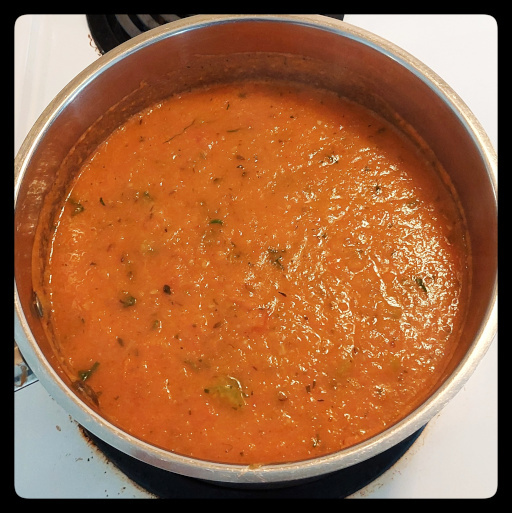

Is this soup or sauce? Depends if you dip a grilled cheese sandwich, or stir in pasta.

olive oil
onion
celery
carrot
garlic
green pepper
tomatoes, juicy ones like roma
salt
pepper
basil
oregano
rosemary
thyme
chili flakes
soup stock, ckicken, beef, or veggie
Dice onion, celery, and carrot. Set aside some celery to add after blending.
In a pot large enough to hold all the ingredients, saute the above in olive oil until softened.
Finely chop a few cloves of garlic and add.
Dice a green pepper and add to pot.
Dice the tomatoes, set some aside, and add the rest to the pot.
Salt the tomatoes.
Add basil, oregano, rosemary, thyme, chili, peppr flakes to taste.
Add stock to get the right consistency.
Stew on medium-low for about 10 minutes.
Puree everything until almost smooth with an immersion blender. Or use a standup blender, but be careful as the sauce expands when blended if hot and could spray out the lid.
Add stock as needed to get the consistency right.
Re-add to the pot, then add the tomatoes and celery previously set aside.